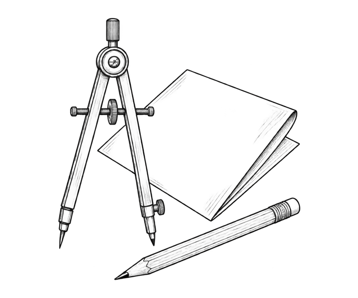
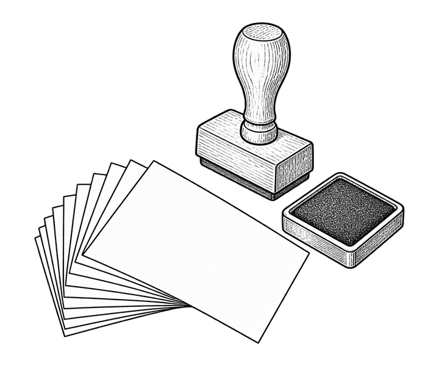

Studio
Ombra is a studio of six in Chicago’s West Loop. We draw, photograph and build things for brands that would rather be understood than noticed.
- 2014Founded
- 6People, one room
- 140Projects shipped

Illustration
Engravings, line drawings and editorial illustration. We work from the plate up: every drawing starts as ink on paper and is only vectorised once it has earned it. Recent work runs from a single spot illustration to a sixty-plate field guide.
Photography
Product, still life and architecture, shot in our own studio on a black glass stage or on location with a bag of two lights. We art direct, shoot and retouch under one roof, so what you approve on the contact sheet is what ships.
Digital design
Websites, identities and the design systems behind them. We build in the open with the people who will maintain the work, write the documentation ourselves, and leave behind fewer moving parts than we found.

Print and identity
Marks, stationery, packaging and the occasional book. We spend the first week of every identity with a pencil, test the result at stamp size and on the side of a van, and choose the paper before the typeface.
People
Six of us, four of whom agreed to sit for a portrait.
Ines Carvalho
Founder and creative directorMara Lindqvist
PhotographerKwame Boateng
Digital design leadYuki Tanabe
ProducerWorking together
We take on a handful of projects each season and prefer to start with a conversation rather than a brief. Tell us what you are making, roughly when it needs to exist, and we will tell you honestly whether we are the right studio for it.
Get in touch